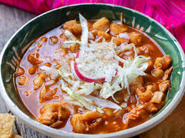

POZOLE RECIPE

Receta de pozole rojo con carne de cerdo: Deliciosa tradición mexicana
Nada más rico para un almuerzo que un rico pozole rojo , y
no nos dejarás mentir al decir que uno de los mejores acompañantes
de un buen pozole es la tierna carne de cerdo
Ingredientes
- carne de cerdo
- maiz cocido
- chiles secos
- ajo
- rabanos
Preparaciòn
- Primero poner la carne a coser
- En otra olla poner los chiles junto con el ajo a coser
- una vez cocidos los chiles licuarlos con el caldo de la carne
- Sazonar todo junto y disfrutar